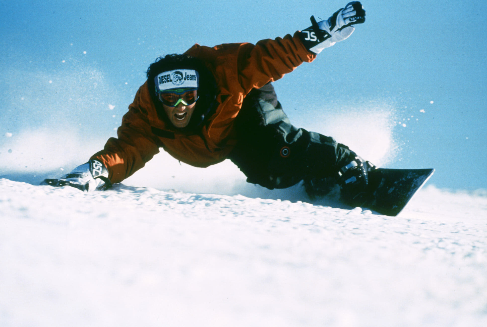
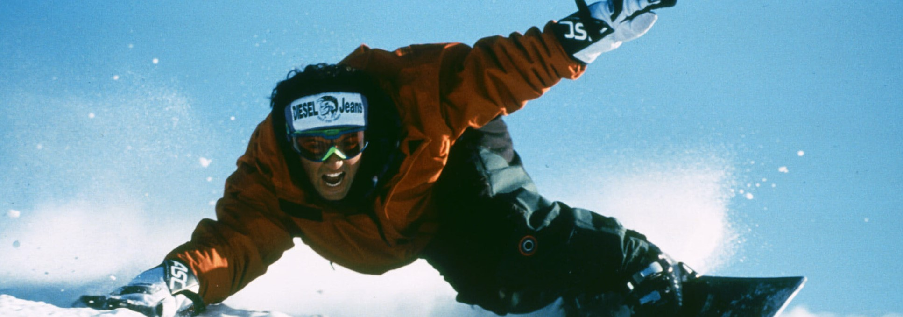

Nos principes
Notre design a été conçu dans un seul but : rendre la visite de nos clients la meilleure qu'elle soit
Chez Ski Drop, nous avons créé un design visant la facilité d'utilisation tout en ayant de l'élégance. Voici la liste des choix de design que nous avons fait en considérant comme public cible des clients de tous âges, particulièrement les adultes pratiquant les sports hivernaux :
- Répétition des éléments visuelles Tout au long des pages du site Web, nous maintenons le même en-tête ainsi que le même bas de page. Nous maintenons également la structure globale des pages, soit un en-tête, qui inclut le navigateur, une image avec une phrase, le contenu et finalement le bas de page.
- Choix des couleurs Nous avons choisi des couleurs neutres, soient blanc, gris et bleu. Nous utilisons principalement le blanc comme couleur de fond, une couleur qui rappelle la neige. Le gris est présent pour contraster le blanc, permettant ainsi d'avoir une écriture qui se lit bien. De plus, l'en-tête et le bas de page sont gris, ce qui vient complémenter le reste de la page qui est blanc. Finalement, les éléments bleus sont présents pour ajouter un "punch" aux pages. Le bleu rappelle également le ciel clair pendant une journée de ski.
- Mise en page Nous avons fait une mise en page simpliste qui se traverse seulement verticalement, ce qui rend la visite plus simple pour les clients. Cette mise en page se transitionne parfaitement en version mobile, où nous avons tenté de garder les pages le plus près possible de la version pour ordinateur. Les deux gros changements sont l'image du haut de la page que nous avons diminué pour simplifier la page ainsi que la navigation que nous avons minimisé et qui suit le client tout au long de la visite.